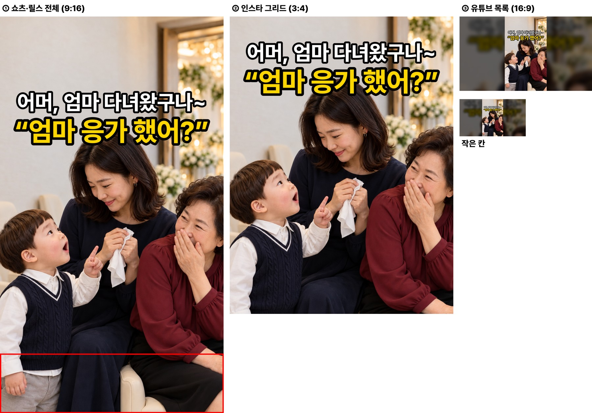
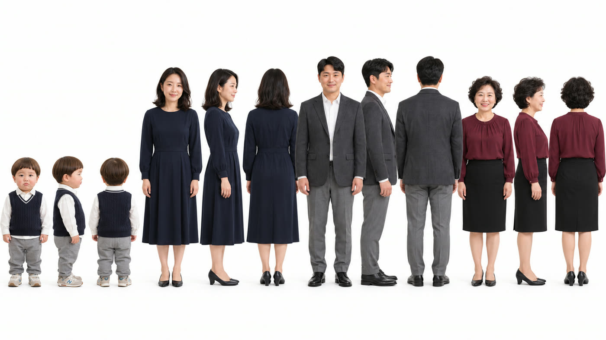
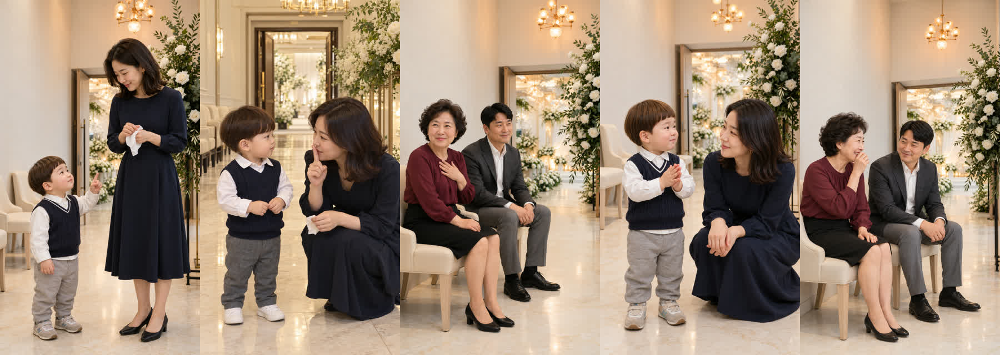
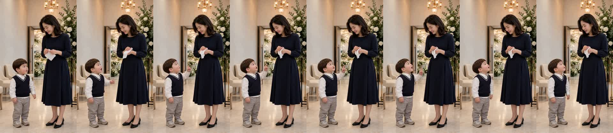
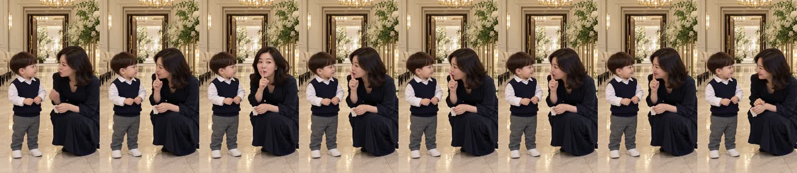
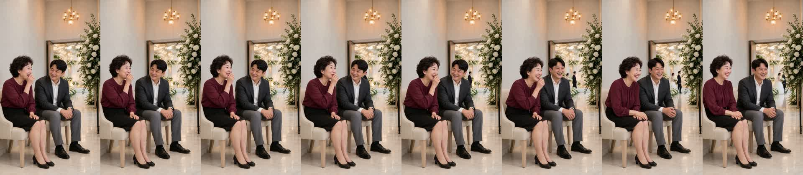

결혼식장 «엄마 응가 했어?» 확인
doyoon-wedding-clap-001 · R6 · 18.1초 · 5컷 · D0~D8 통과 · 2026-10-29
흐름
결혼식장 로비에서 화장실 다녀온 엄마에게 도윤이가 «엄마 응가 했어?» → 엄마 «쉿, 손만 씻었어…» → 옆자리 하객 아주머니 «어머, 엄마 다녀왔구나~»(아빠는 웃음 참음) → 도윤이 박수 치며 «엄마 잘했어요!»(엄마 얼굴 가림) → 아주머니 웃음 터지며 «아이고, 칭찬도 해 주네~»(아빠도 웃음).
원작: 82cook «아기 어렸을 때 했던 말» 댓글 99번 — 24개월 아들 «엄마 응가 했지»
봐 주셔야 할 것
- 첫 컷 도윤이 음높이 308Hz — 경고선 330Hz 아래입니다(4번 컷은 356Hz). 아기 목소리로 들리는지 들어 주세요.
- 2번 컷 배경 — 뒤 복도가 좌우 의자 줄로 길게 보여 다른 컷보다 넓어 보입니다. 도윤이 신발도 이 컷만 흰색입니다.
- 완성본 받아쓰기에서 첫 «응가»가 «은가»로 잡혔습니다(컷 받아쓰기는 «응가»).
- 엄마 «쉿»은 속삭임이라 완성본 받아쓰기에서 빠졌습니다.
썸네일
흰 줄 = 하객 아주머니 대사, 노란 줄 = 도윤 대사. 결말 «엄마 잘했어요!»는 숨겼습니다.

제작 중 고친 것
- 시작 그림 1차(R1)에서 5번 컷 의자가 긴 소파로 바뀌어, «따로 놓인 크림 의자» 문장을 넣어 다시 그렸습니다(R2).
- 1번 컷은 시작 그림이 도윤이를 전신으로 작게 그려, H3 명세를 «머리부터 발끝까지 둘 다» 같은 거리로 맞췄습니다(R4).
- 2번 시작 그림은 엄마가 검지로 입을 가려 얼굴 검출이 안 돼, 입 크롭을 눈으로 보고 입 닫힘을 서명했습니다.
- 끝 꼬리가 0.24초로 기준을 넘어 5번 컷 끝을 0.12초 줄였습니다(R6). H3는 5컷 한 번씩, 다시 뽑은 컷 없음.
컷별 실측
| 컷 | 대사 | 받아쓰기 | 음높이 |
|---|---|---|---|
| 1 도윤 | 엄마 응가 했어? | 엄마 응가했어? | 308Hz |
| 2 엄마 | 쉿, 손만 씻었어… | 쉿 손만 씻었어 | 속삭임 |
| 3 하객 아주머니 | 어머, 엄마 다녀왔구나~ | 어머 엄마 다녀왔구나 | 203Hz |
| 4 도윤 | 엄마 잘했어요! | 엄마 잘했어요! | 356Hz |
| 5 하객 아주머니 | 아이고, 칭찬도 해 주네~ | 아이고 칭찬도 해주네 | 194Hz |
완성본 받아쓰기: «엄마 은가했어? 손만 씻었어 어머 엄마 다녀왔구나 엄마 잘했어요 아이고 칭찬도 해 주네»
인물 시트 · 시작 그림


컷 프레임




